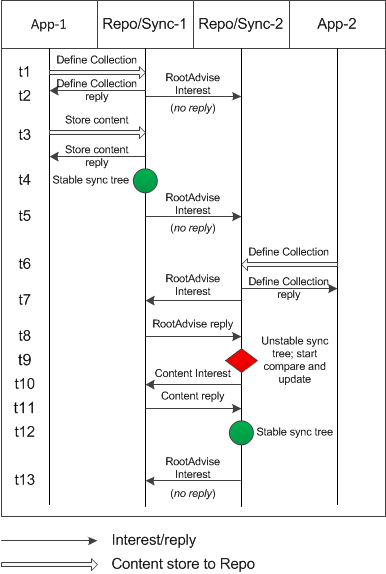

Introduction
Sync is a CCNx facility that allows CCN components and applications to define Collections of named data in Repositories that are to be automatically kept in sync with identically defined Collections in neighboring Repositories. Sync is currently embedded in the Repository, and will be available separately in the future.
Synchronization Protocol
Associated with each Repository is a Sync Agent that is responsible for keeping information about local Collections up to date as content is added to the Repository, for detecting and acquiring Content Objects in remote copies of the Collections that are not in the local Repository, and for responding to inquiries from remote Sync Agents for information about content in local Collections. The Synchronization Protocol is the dialog between Sync Agents for doing this.
A Collection is a set of content whose names share a common prefix, and is defined by an application through use of a Create Slice request as described in CCNx Create Collection Protocol. (The definition of a Collection is known as a slice.) Each Collection is synchronized independently of all others. When it detects a new Collection, the local Sync Agent builds a sync tree for the Collection that represents its content. As Content Objects are added to the Repository, their names are passed to the local Sync Agent, which updates relevant sync trees whenever it detects new content with matching names.
The combined hash for each node in the tree is the arithmetic sum of the hashes of individual names in that node and of the combined hashes of all its child nodes (with carries). The combined hash for the sync tree is thus the sum of the hashes of all names in sync tree.
The Sync Agent synchronizes a Collection with remote copies by periodically expressing a Root Advise Interest to neighboring nodes (i.e., reachable with scope = 2). The Root Advise contains the combined hash of the sync tree for the Collection. When a remote Sync Agent receives the Root Advise, it compares the root hash in the Interest with its own root hash. If they match, the Collections are in sync, and no response is sent.
If the root hashes differ, the remote Sync Agent responds with its own root hash and the root node of its Collection. Using Node Fetch Interests, the local Sync Agent iteratively fetches all nodes having combined hashes that it does not recognize, and constructs a list of names that are not in the local sync tree. It then expresses a standard Interest for each name in the list, and stores returned content in the local Repository. (Note that, when possible, Node Fetches and Interests are pipelined for efficiency.)
Root Advise Interest
A Root Advise Interest is used to determine if there are any names in a remote Collection that are not in the local Collection. For each local sync tree, the Sync Agent expresses a Root Advise Interest with a name that is, when expressed as a URI, of the form:
ccnx:/<topo>/%C1.S.ra/<slicehash>/<roothash>
where:
-
<topo> is the topological prefix for the sync tree.
-
%C1.S.ra is the command marker for the Root Advise Interest.
-
<slicehash> is a hash code that names the collection. Computing <slicehash> uses the CCN default hash algorithm to form a hash over the ccnb encoding of the configuration slice for the root.
-
<roothash> is the combined hash of the root node for the sync tree.
The Root Advise Interest is a request for a Repository to respond with the root node for a corresponding sync set that does not have a combined hash equal to <roothash>. The Interest may also contain an exclusion list for combined hashes already examined, so remote trees need only be examined once for missing content. Since updates to the sync tree should be seen within a reasonable time, a short freshness seconds for the response is used.
A Repository with a corresponding sync set that does not have a combined hash of <roothash> should respond; otherwise, no response should be made.
The response to a Root Advise Interest is, when expressed as a URI, of the form:
ccnx:/<topo>/%C1.S.ra/<slicehash>/<roothash>/<responsehash>/<version>/<segment>
where:
-
<topo>, <slicehash>, and <roothash> are as described above and must be the same as for the request.
-
<responsehash> is the hash for the responder’s root.
-
<version> and <segment> are optional, and follow normal CCN naming practice. (See CCNx Basic Name Conventions.)
The Content Object in the response to the Root Advise Interest has the ccnb encoding of the root node of the remote sync tree, and is described below in Root Advise and Node Fetch Response Content.
As a Sync Agent examines nodes from the remote sync tree, it may encounter combined hash codes that are included in the local sync tree. In the above example, regardless of updates to the local sync tree, there is no need to receive remote roots with hashes of <roothash> or <responsehash> in response to subsequent Root Advise requests. The CCN Interest mechanism allows them to be excluded using an exclusion filter. This minimizes the likelihood of responses containing names that are already known to be included in the local tree.
Node Fetch Interest
When Root Hashes differ, the Sync Agent must fetch nodes of the remote sync tree that have combined hashes that differ from hashes in the local tree. To obtain these nodes, the Sync Agent uses a Node Fetch Interest that is, when expressed as a URI, of the form:
ccnx:/<topo>/%C1.S.nf/<slicehash>/<responsehash>
where:
-
<topo> and <slicehash> are as described above for Root Advise.
-
%C1.S.nf is the command marker for the Node Fetch Interest.
-
<responsehash> is the combined hash for a node that was returned in response to the Root Advise or a previous Node Fetch.
Note that the Root Advise refers to the node at the root of the sync tree, while the Node Fetch can fetch from any part of the sync tree.
The response is, when expressed as a URI, of the form:
ccnx:/<topo>/%C1.S.nf/<slicehash>/<responsehash>/<version>/<segment>
where:
-
<topo>, <slicehash>, and <responsehash> are as described above for Node Fetch, and must be the same as for the request.
-
<version> and <segment> are optional, and follow normal CCN naming practice. (See CCNx Basic Name Conventions.)
The content for the response is the ccnb encoding of the requested tree node, and is described below in Root Advise and Node Fetch Response Content.
As Content Objects are found in remote Repositories that are not present locally, they are fetched using normal CCN Interests (see CCNx Interest Message) and stored in the local Repository.
Example
The Synchronization Protocol is illustrated in the following simple example.
In this example, there are two applications, App-1 and App-2, running on separate nodes. Each node has a Repo/Sync Agent pair attached to the application. Assume that both applications wish to have identical contents for a shared collection.

-
At t1, application App-1 creates a Collection. We will assume that nothing in Repo-1 matches the Collection description, so the Collection is initially empty.
-
At t2, Sync-1 sends a Root Advise Interest. Even through the Collection is empty, a neighboring Repository might have a matching Collection that is not empty. In this example, there is no matching Collection, so there is no reply.
-
At t3, App-1 stores some content into Repo-1. This causes Sync-1 to notice that the empty sync tree is no longer valid, so it builds a new sync tree that describes the content.
-
At t4, the new sync tree has been built and is stable.
-
At t5 Sync-1 sends another Root Advise Interest. Since there is still no matching Collection, there is no response.
-
At t6, a second application, App-2 running on node-2, creates a matching Collection (using the identical description as App-1 created). The Collection is initially empty.
-
At t7, Sync-2 sends a Root Advise Interest.
-
At t8, Sync-1 sends a Root Advise reply because, while Sync-1 has a matching Collection, the root hash from Sync-2 does not match the root hash for Sync-1.
-
At t9, Sync-2 notices that its local sync tree root hash does not match the root hash that it received from Sync-1, so it compares the root node that it received from Sync-1 with its own, and finds the name of the Content Object in the Repo-1 Collection that it doesn’t have.
-
At t10, Sync-2 sends a content Interest since, in this simple example, there is only one Content Object to fetch.
-
At t11, Repo-1 replies with the Content Object.
-
At t12, all of the sync tree differences have been resolved, and a new sync tree has been built by Sync-2 and is stable. At this point, the Collections are identical at both Repo-1 and Repo-2.
-
At t13, the last event, Sync-2 sends a final Root Advise Interest, since there may be differences that have not yet been noticed between its local sync tree and some other remote sync trees. In this example, the two Repositories have the same contents for the Collection, and therefore the same root hash, so Sync-1 does not reply.
From this point on, Sync-1 and/or Sync-2 will periodically send Root Advise Interests (with no responses) until the Collection is updated at one of the nodes, at which time the sequence from t6 and beyond is repeated.
Root Advise and Node Fetch Response Content
The Content Object sent in response to a Root Advise or Node Fetch Interest contains a node of the sync tree associated with the specified Collection. For Root Advise, the Content Object is for the root node; for Node Fetch, it is for the requested node.
The content of a sync tree node is shown below. The content of the Content Object is the ccnb encoding of this data.
SyncNode ::= SyncVersion
SyncNodeElements
SyncContentHash
Name
Name
SyncNodeKind
SyncLeafCount
SyncTreeDepth
SyncByteCount
SyncVersion
SyncVersion ::= nonNegativeInteger
SyncVersion specifies the version of the Slice definition. SYNC_VERSION and SLICE_VERSION are both defined in SyncMacros.h to have values of 20110614.
SyncNodeElements
SyncNodeElements ::= (Name | SyncContentHash)*
SyncNodeElements specifies the elements in a sync tree node. An individual element can be the name of a Content Object as defined in the CCNx Name Specification, or the combined hash of a child node. There can be any mix of names and hashes in a sync tree node.
SyncContentHash
SyncContentHash ::= BLOB
SyncContentHash is the combined hash of a sync node and all of its descendants.
Name, Name
Name, Name are the minimum and maximum names respectively. The minimum name is the least name in the covered set, and the maximum name is the greatest name in the set, based on canonical ordering of CCN names. The covered set for a node is the union of the set of all names in the node with the covered sets of all descendant nodes.
SyncNodeKind
SyncNodeKind ::== nonNegativeInteger
SyncNodeKind is the kind of sync node, and is reserved for future expansion. It should be 0 to preserve future compatibility.
SyncLeafCount
SyncLeafCount ::= nonNegativeInteger
SyncLeafCount is the count of sync tree leaf nodes including the current node and all of its descendants.
SyncTreeDepth
SyncTreeDepth ::= nonNegativeInteger
SyncTreeDepth is the depth of the sync tree including the current node and all of its descendants.
SyncByteCount
SyncByteCount ::= nonNegativeInteger
SyncByteCount is the sum of the byte counts for the encodings for descendants of the current node.
SyncNodeKind, SyncContentHash, SyncLeafCount, SyncTreeDepth, and SyncByteCount are provided for efficiency, and can be derived by analyzing lower-level nodes of the sync tree.